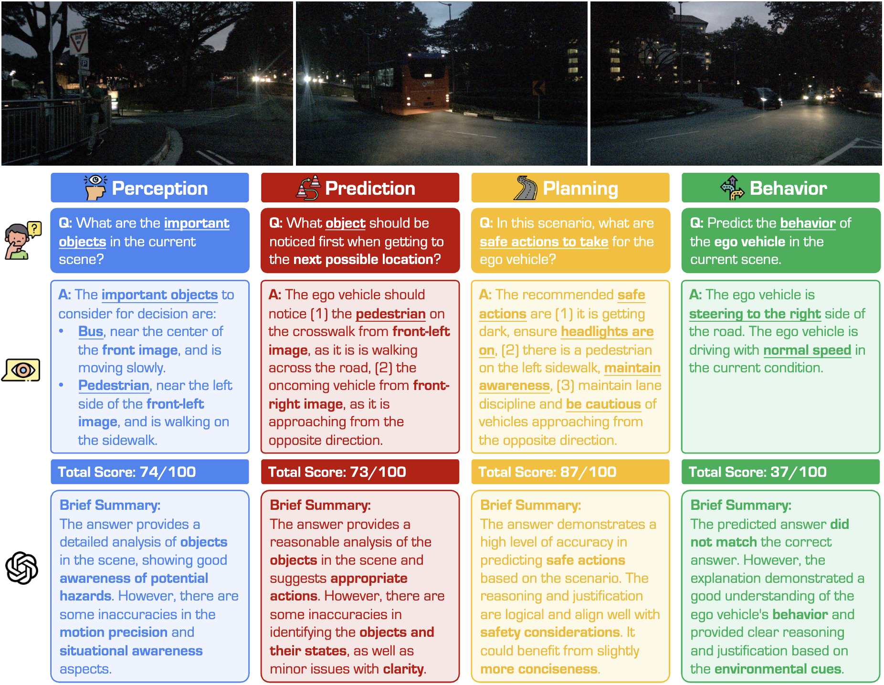

Benchmark Study

Example of ...

Example of ...
The rapid advancements in Vision-Language Models (VLMs) have sparked significant interest in their application to autonomous driving, with a focus on achieving interpretable driving decisions through natural language interactions. In this work, we question the fundamental assumption that VLMs inherently provide visual-grounded explanations in driving contexts thus improving driving interpretability. The assumption has been widely acknowledged yet systematically examined. Through extensive experiments across 17 conditions (including clean image, corrupted image, and text-only inputs), 12 models, and 5 task domains, we comprehensively investigate the reliability of VLMs' visual-grounded explanations in driving scenarios. Our findings reveal that VLMs frequently fabricate plausible driving responses from general knowledge or subtle text cues, especially in scenarios with degraded or absent visual information. However, the phenomenon is long-hiding due to significant problems in terms of dataset imbalances, and unreliable evaluations within current driving-with-language benchmarks, which fail to effectively assess the contextual and safety-oriented requirements of autonomous driving tasks. Instead of pushing for the state-of-the-art model under problematical setups, our works highlight the need to rethink the current dataset and metric designs that better capture the visual-grounded reliability in VLMs for trustworthy real-world autonomous driving.
Overview of ...
Example of ...
Example of ...
@article{xie2025drivebench,
author = {Xie, Shaoyuan and Kong, Lingdong and Dong, Yuhao and Sima, Chonghao and Zhang, Wenwei and Chen, Qi Alfred and Liu, Ziwei and Pan, Liang},
title = {Are VLMs Ready for Autonomous Driving? An Empirical Study from the Reliability, Data, and Metric Perspectives},
journal = {arXiv preprint arXiv:2501.},
year = {2025},
}